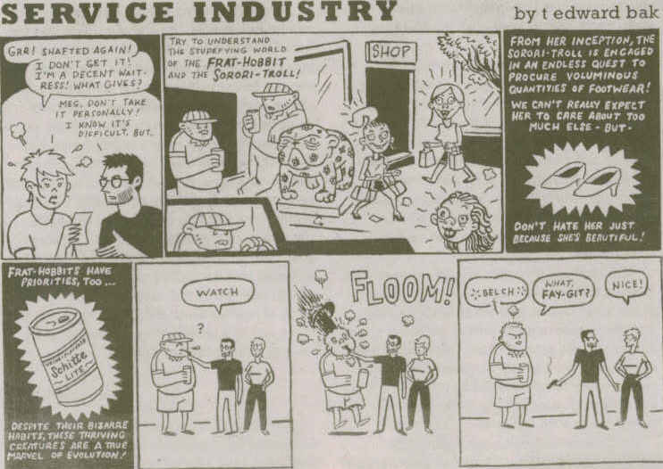

I was driving to get drunk cookies Matt and Missy and I noticed my friend Orion had returned. It had been a while since he and I hung out, I missed him all summer. It was late (or early, depending on how you think nights should be) and he was just sorta chilling out. I'll have to tell Carrie. I promised her I would.
I'd just like to official announce my intention to refrain from alcohol until my 21st birthday. I know, assuming I'm strong to resist the temptations of grain alcohol, I've decided that the lawmakers are right--it is immoral and wrong for individuals under 21 to partake in alcohol consumption. I will no longer participate in this activity until I am of legal age O:-)
So, I've found out that I'm a moody sober person. I was just anti-social at the party last night (which was actualy alot of fun). The most fun I had was zipping down Cedar Shoals on my way back to fetch Missy and Matt, listening to Blue Oyster Cult's "Don't Fear the Reaper." It was neato, far out, and just about everything you could imagine driving around in a convertable at 3 a.m. would be.
...why can't it be cold again?
"Romeo and Juliet / Are together in eternity...Romeo and Juliet / We can be like they are..."
Two things. One, does anyone get the Jerm thing? I think it sounds like "germ", and it refers to Jeremy. I think it's cool because it implies so much about Jeremy, you know, that he's pathogenic. I wish someone would imply or explicitly remark that I am pathogenic. I like the adjective. Second thing. Two, does anyone appreciate this birthday announcement deal? It's mostly for me, I can go back to past journals and see when your "big day" is so I don't forget. I'm an idiot, thank you :-)
I don't have much, really. I'll have something new later though, look for that, something I have never done blog-wise. This is all for now...tootles individuals, expand your diction, manipulate minds!
"I'm going to post a scathing denunciation of the
tooth fairy in my BLOG!" ~This Modern World

I found this in the Flagpole this week. I thought it was a fairly accurate portrayal of my COMMUNICATION LAW class where I am sandwiched between TWO sorori-trolls, one of which is an officer in Alpha Gamma Delta. Yah, I could go off on this tangent, but she seems alright I guess...
Boneshakers was fun last night. Alot of people were there and I'm really glad Jerm had a good time. I care tons about Jerm and it's important he had a good birthday. Boneshakers started out really barren, but it got better as the night progressed. Jerm was drunk, and I was non-moody sober, which is always good, though I had to leave around 1ish cause I had early classes today. I saw Bryant, which was weird, I never see him, but he seemed alright. He's such a nice guy, I should get to know him more, because I really don't know him that well which is sad. It was nice seeing him... I got Austin's phone number last night! Seems like alot of people have been asking me for it, so I thought I should add it to my collection. I played pool w/ Gen and almost beat her. Dancing w/ Mary Kate was fun...ah, Wednesdays...
I'm doing another article for the Red and Black about intermural flag football. Exciting, I went w/ the Pad today, it was great. I hope to get more involved w/ newswriting, getting clips and stuff. I was really tired today though, I need to sleep tonight, but looks like I'm going to hang out w/ April and do my Spanish homework. Tomorrow is Lambda Movie Night, then I don't know what I'll do...I'd like to talk to Missy, I have some things I really want to talk about. Best friends are nice, you know? Nice...
Yah, there's a new Sherry. Contrary to popular belief, it isn't inspired in the sense that most people think. It's a reaction to many things, so take is as you like, but I really just think pinto-beans and peas just go too far. Creepy...
"What is this? / Are you some kind of a hypnotist? / Waving your powers all around..."
I called her, but she wasn't around. I'm thinking I probably just won't talk to her. I'd like to talk to her, but it seems she doesn't want to listen. Who'd want to?
"Come on now, try and understand /
The way I feel under your command /
Take my hand, come under cover /
They can't hurt you now..."
In two minutes your pulse will drop
Your forehead will moisten
your face will flush
You'll touch yourself
Wince from the cold and
fall to the floor
And your attempts to weep
will only be quelled
by your will to die
"With love we sleep, with doubt the vicious circle turns, and burns
Without you, I cannot live, forgive the yearning burning
I believe in love too real to feel
So take me now, take me now,
Take me now..."
~"Because The Night"
10,000 Maniacs